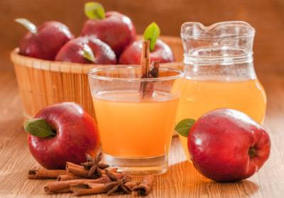

Продукція
Сідр "Hugin" - це сидр зроблений на основі яблук, його назва походить від одного із супутника Одіна ворона Хугіна. Крафтовий сидр виробляється за класичною технологією на сучасному обладнанні з частковою витримкою напою в дубових бочках, завдяки чому зберігає гармонійний аромат і багатий смак з помірною терпкою танін. Цей напій оцінять не лише гурмани, а й поціновувачі слабоалкогольних напоїв.
Сідр "Munin"-Особливий купажний сидр, створений змішуванням натуральних фруктових основ у яблучному сидрі високої якості. Назва походить від імені брата Хугіна, а також супутника Одіна ворона Муніна. Насолоди літа змішалися зі свіжістю грушевого сидру. Смак краще проявляється, якщо пити сидр охолодженим, з льодом або шматочками фруктів.
Сідр "Gery" - Особливий купажний сидр із натуральним медом та винним настоєм запашних трав, зібраних на альпійських луках, які передають свій аромат та смак солодкому яблучному напою. Назва цього напою походить від імені одного з вовків Одіна Гері.
Сідр "Freks" - Яблучний купажний сидр із додаванням соку стиглої ароматної полуниці стане примою кожного святкового столу. Любителі нових та оригінальних смаків можуть сміливо замінити цим напоєм деякі види ігристих вин. Приємний смак сидру допоможе підняти настрій та залишить приємні враження від дегустації. Назва походить від імені ще одного вовка Одіна Фрекі.